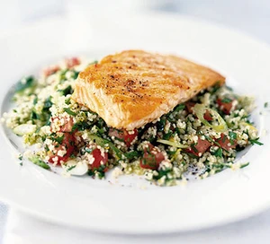

Culinary Chronicles: Showcasing the Best Food in the World
A website by: Muhyidin
Favorite Cuisines
- Italian
- Japanese
- Mexican
- Middle Eastern
- Thai
Favorite Dishes

Italian Spaghetti
Spaghetti is just the name of the specific type of pasta, the taste profile depends a lot on the sauce uses... check them out below
Recipes
Japanese
from rice and tofu to miso and noodles, if you have the Japanese ingredients but are unsure what you can do with them, browse our recipes for inspiration.
RecipesMexican
Whether for dinner tonight, for a grand Mexican Fiesta, you'll find all your favourite Mexican recipes right here!.
Recipes

Middle Eastern
Feast on a range of Middle Eastern-style dishes, such as shakshuka, tagine, kofta and falafel. This vibrant cuisine is packed full of flavour.
Recipes